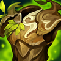
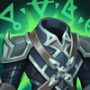

Peleador
/
Tanque
Dificultad Baja
HABILIDADES


PASIVA • DESCARGA DE ADRENALINA
Dr. Mundo regenera un 1% de su Vida Máxima cada seg.
1 • CUCHILLA INFECTADA
Dr. Mundo arroja su cuchilla, lo que inflige daño igual a un porcentaje de la vida actual de su objetivo y lo ralentiza durante un breve periodo. Dr. Mundo se deleita con el sufrimiento de los demás, por lo que recupera un porcentaje del costo de vida cuando conecta una cuchilla (se duplica en golpes finales).
2 • ARDIENTE AGONÍA
Dr. Mundo drena su propia vida para reducir la duración de las inhabilitaciones e infligir daño continuo a los enemigos cercanos.
3 • MASOQUISMO
Dr. Mundo obtiene daño de ataque adicional según su vida faltante y su siguiente ataque básico le da un cabezazo a su objetivo, lo que inflige daño adicional. Aumenta la resistencia mágica de manera pasiva cuando Dr. Mundo recibe daño mágico o paga un costo de vida.
DEFINITIVA • SADISMO
El Dr. Mundo sacrifica una parte de su vida para aumentar su velocidad de movimiento y regeneración de vida de forma drástica.
CONFIGURACIÓN
OBJETOS
-

Égida de Fuego Solar
3000+500 Vida Máxima
+15 Aceleración de Habilidad
INMOLAR: Inflige 16-25 de daño mágico + un 0.8% de Vida adicional por segundo a enemigos cercanos. Dañar campeones o monstruos épicos con Inmolar aumenta su daño en un 8% por 5 seg. Se acumula hasta 6 veces.
TOQUE LLAMEANTE: Al tener el máximo de acumulación de Inmolar, los ataques queman a los enemigos cercanos con el daño de Inmolar durante 3 seg.
Inmolar inflige 125% de daño a súbditos y montruos. -

Armadura de Warmog
2850+700 Vida Máxima
+200% Regeneración de Vida
+10 Aceleración de Habilidad
CORAZÓN DE WARMOG: Si tienes al menos 950 de Vida Máxima, restaura un 5% de tu Vida por seg si no has recibido daño dentro de los últimos 6 seg.
-

Apariencia Espiritual
2900+350 Vida Máxima
+100% Regeneración de Vida
+45 Resistencia Mágica
+10 Aceleración de Habilidad
BENDITO: Aumenta todos los efectos de curación, regeneración y de drenar sobre ti mismo en un 30%.
-

Cota de Espinas
2900+200 Vida Máxima
+75 Armadura
ESPINAS: Recibir un ataque refleja 25 de daño mágico +10 de armadura adicional al atacante e inflige un 40% de Heridad Graves por 3 seg si es un campeón. Inmovilizar campeones enemigos también inflige un 60% de Heridas Graves por 3 seg.
Heridas Graves reduce la efectividad de las curaciones y efectos regenerativos. -

Placa del Hombre Muerto
2800+250 Vida Máxima
+50 Armadura
IMPLACABLE: +5% de Velocidad de Movimiento.
IMPULSO: Moverte genera impulso, lo que otorga hasta 50 de Velocidad de Movimiento al llegar a 100 acumulaciones. Atacar elimina todas las acumulaciones de Impulso. Las acumulaciones decaen cuando se afecta la velocidad de movimiento.
GOLPE APLASTANTE: Los ataques infligen hasta 100 de daño mágico adicional según el Impulso consumido. Los ataques cuerpo a cuerpo con el máx. de Impulso ralentizan un 50% durante 1 seg. -

Botas de Mercurio
1000CALZADO: +40 de Velocidad de Movimiento.
MEJORADO: +10 de Resistencia Mágica.
TENACIDAD: Reduce la duración de aturdimientos, ralentizaciones, provocaciones, miedo, silencio, ceguera e inmovilizaciones un 35%.
CARRERA (ACTIVA): Aumenta la Velocidad de Movimiento un 15% durante 3 seg. Infligir o recibir daño de campeones desactiva los efectos de Carrera. (60 seg de enfriamiento). -

Encantamiento de Gárgola
500ARMADURA PÉTREA (ACTIVA): Aumenta tu Vida un 65% y reduce el daño que infliges un 60% durante 4 seg. Si hay 3 o más héroes enemigos cerca, aumenta tu Vida en un 130%. (45 seg de enfriamiento).
RUNAS Y HECHIZOS
-

Sobre la Marcha
Al atacar, moverte y lanzar habilidades, juntas acumulaciones de Energía. Al llegar a 100 acumulaciones, tu siguiente ataque te curará y te otorgará velocidad de movimiento aumentada.
CURACIÓN: 15 - 85 (basado en nivel) + 30% adicional Daño de Ataque + 30% adicional Poder de Habilidad.
VELOCIDAD DE MOVIMIENTO ADICIONAL: 20% durante 1 seg.
En campeones a distancia, cura un 30% al atacar súbditos. -

Fragilidad
Reducir el movimiento de campeones enemigos hará que reciban un 5% de daño adicional durante los siguientes 5 seg.
-

Cazador: Titán
Obtienes 20 de Vida Máxima. Los derribos de campeones únicos otorgan 20 de Vida Máxima Y 4% de Tenacidad.
-

Cazador de Manada
Obtienes 2% de Velocidad de Movimiento al estar cerca de campeones aliados. Por cada aliado único con el que participes en un derribo, obtienes 50 de oro y el aliado 50 de oro.
-

Castigo
Enfriamiento: 10 seg
Inflige 440 de daño verdadero (440-1000) a un monstruo épico o grande, o a un súbdito. Usar Castigo sobre monstruos restaurará 70 de Vida (70 + 10%). Matar a 4 monstruos grandes mejora Castigo a Castigo Devastador o Catigo Desafiante, que puede utilizarse sobre campeones enemigos.
Permiso para Cazar: Obtienes un 20% de experiencia adicional de monstruos de la jungla de forma permanente, pero obtienes un 20% menos de oro y experiencia de súbditos de forma temporal.
Diente y Uña: Inflige un 10% más de daño mágico y te restauran 30 de Vida durante 5 seg.
Obtiene un carga cada 45 seg, hasta un máximo de 2. -

Destello
ENFRIAMIENTO: 150 seg.
Te teletransportas una distancia corta hacia delante o hacia la dirección objetivo.
CÓMO JUGAR DIANA
Diana es una asesina de daño mágico del carril central. Diana es una campeona cuerpo a cuerpo y puede luchar mucho al principio del juego (especialmente contra campeones a distancia) cuando intenta caminar hasta los últimos súbditos golpeados. Una vez que llegues al nivel 5 y obtengas Moonfall (Ultimate), puedes buscar vagar por el mapa con su estilo de juego agresivo. Lunar Rush (tercera habilidad) es una habilidad de carrera y se puede usar para atacar a los campeones enemigos y luego puedes usar tu habilidad definitiva para infligir una gran cantidad de daño.